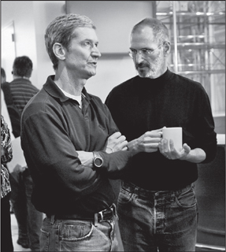

CEO
Still Crazy after All These Years

When Steve Jobs returned to Apple and produced the "Think Different" ads and the iMac in his first year, it confirmed what most people already knew: that he could be creative and a visionary. He had shown that during his first round at Apple. What was less clear was whether he could run a company. He had definitely not shown that during his first round.
Jobs threw himself into the task with a detail-oriented realism that astonished those who were used to his fantasy that the rules of this universe need not apply to him. "He became a manager, which is different from being an executive or visionary, and that pleasantly surprised me," recalled Ed Woolard, the board chair who lured him back.
His management mantra was "Focus." He eliminated excess product lines and cut extraneous features in the new operating system software that Apple was developing. He let go of his control-freak desire to manufacture products in his own factories and instead outsourced the making of everything from the circuit boards to the finished computers. And he enforced on Apple's suppliers a rigorous discipline. When he took over, Apple had more than two months' worth of inventory sitting in warehouses, more than any other tech company. Like eggs and milk, computers have a short shelf life, so this amounted to at least a $500 million hit to profits. By early 1998 he had halved that to a month.
Jobs's successes came at a cost, since velvety diplomacy was still not part of his repertoire. When he decided that a division of Airborne Express wasn't delivering spare parts quickly enough, he ordered an Apple manager to break the contract. When the manager protested that doing so could lead to a lawsuit, Jobs replied, "Just tell them if they fuck with us, they'll never get another fucking dime from this company, ever." The manager quit, there was a lawsuit, and it took a year to resolve. "My stock options would be worth $10 million had I stayed," the manager said, "but I knew I couldn't have stood it—and he'd have fired me anyway." The new distributor was ordered to cut inventory 75%, and did. "Under Steve Jobs, there's zero tolerance for not performing," its CEO said. At another point, when VLSI Technology was having trouble delivering enough chips on time, Jobs stormed into a meeting and started shouting that they were "fucking dickless assholes." The company ended up getting the chips to Apple on time, and its executives made jackets that boasted on the back, "Team FDA."
After three months of working under Jobs, Apple's head of operations decided he could not bear the pressure, and he quit. For almost a year Jobs ran operations himself, because all the prospects he interviewed "seemed like they were old-wave manufacturing people," he recalled. He wanted someone who could build just-in-time factories and supply chains, as Michael Dell had done. Then, in 1998, he met Tim Cook, a courtly thirty-seven-year-old procurement and supply chain manager at Compaq Computers, who not only would become his operations manager but would grow into an indispensable backstage partner in running Apple. As Jobs recalled:
Tim Cook came out of procurement, which is just the right background for what we needed. I realized that he and I saw things exactly the same way. I had visited a lot of just-in-time factories in Japan, and I'd built one for the Mac and at NeXT. I knew what I wanted, and I met Tim, and he wanted the same thing. So we started to work together, and before long I trusted him to know exactly what to do. He had the same vision I did, and we could interact at a high strategic level, and I could just forget about a lot of things unless he came and pinged me.
Cook, the son of a shipyard worker, was raised in Robertsdale, Alabama, a small town between Mobile and Pensacola a half hour from the Gulf Coast. He majored in industrial engineering at Auburn, got a business degree at Duke, and for the next twelve years worked for IBM in the Research Triangle of North Carolina. When Jobs interviewed him, he had recently taken a job at Compaq. He had always been a very logical engineer, and Compaq then seemed a more sensible career option, but he was snared by Jobs's aura. "Five minutes into my initial interview with Steve, I wanted to throw caution and logic to the wind and join Apple," he later said. "My intuition told me that joining Apple would be a once-in-a-lifetime opportunity to work for a creative genius." And so he did. "Engineers are taught to make a decision analytically, but there are times when relying on gut or intuition is most indispensable."
At Apple his role became implementing Jobs's intuition, which he accomplished with a quiet diligence. Never married, he threw himself into his work. He was up most days at 4:30 sending emails, then spent an hour at the gym, and was at his desk shortly after 6. He scheduled Sunday evening conference calls to prepare for each week ahead. In a company that was led by a CEO prone to tantrums and withering blasts, Cook commanded situations with a calm demeanor, a soothing Alabama accent, and silent stares. "Though he's capable of mirth, Cook's default facial expression is a frown, and his humor is of the dry variety," Adam Lashinsky wrote in Fortune. "In meetings he's known for long, uncomfortable pauses, when all you hear is the sound of his tearing the wrapper off the energy bars he constantly eats."
At a meeting early in his tenure, Cook was told of a problem with one of Apple's Chinese suppliers. "This is really bad," he said. "Someone should be in China driving this." Thirty minutes later he looked at an operations executive sitting at the table and unemotionally asked, "Why are you still here?" The executive stood up, drove directly to the San Francisco airport, and bought a ticket to China. He became one of Cook's top deputies.
Cook reduced the number of Apple's key suppliers from a hundred to twenty-four, forced them to cut better deals to keep the business, convinced many to locate next to Apple's plants, and closed ten of the company's nineteen warehouses. By reducing the places where inventory could pile up, he reduced inventory. Jobs had cut inventory from two months' worth of product down to one by early 1998. By September of that year, Cook had gotten it down to six days. By the following September, it was down to an amazing two days' worth. In addition, he cut the production process for making an Apple computer from four months to two. All of this not only saved money, it also allowed each new computer to have the very latest components available.
On a trip to Japan in the early 1980s, Jobs asked Sony's chairman, Akio Morita, why everyone in his company's factories wore uniforms. "He looked very ashamed and told me that after the war, no one had any clothes, and companies like Sony had to give their workers something to wear each day," Jobs recalled. Over the years the uniforms developed their own signature style, especially at companies such as Sony, and it became a way of bonding workers to the company. "I decided that I wanted that type of bonding for Apple," Jobs recalled.
Sony, with its appreciation for style, had gotten the famous designer Issey Miyake to create one of its uniforms. It was a jacket made of ripstop nylon with sleeves that could unzip to make it a vest. "So I called Issey and asked him to design a vest for Apple," Jobs recalled. "I came back with some samples and told everyone it would be great if we would all wear these vests. Oh man, did I get booed off the stage. Everybody hated the idea."
In the process, however, he became friends with Miyake and would visit him regularly. He also came to like the idea of having a uniform for himself, because of both its daily convenience (the rationale he claimed) and its ability to convey a signature style. "So I asked Issey to make me some of his black turtlenecks that I liked, and he made me like a hundred of them." Jobs noticed my surprise when he told this story, so he gestured to them stacked up in the closet. "That's what I wear," he said. "I have enough to last for the rest of my life."
Despite his autocratic nature—he never worshipped at the altar of consensus—Jobs worked hard to foster a culture of collaboration at Apple. Many companies pride themselves on having few meetings. Jobs had many: an executive staff session every Monday, a marketing strategy session all Wednesday afternoon, and endless product review sessions. Still allergic to PowerPoints and formal presentations, he insisted that the people around the table hash out issues from various vantages and the perspectives of different departments.
Because he believed that Apple's great advantage was its integration of the whole widget—from design to hardware to software to content—he wanted all departments at the company to work together in parallel. The phrases he used were "deep collaboration" and "concurrent engineering." Instead of a development process in which a product would be passed sequentially from engineering to design to manufacturing to marketing and distribution, these various departments collaborated simultaneously. "Our method was to develop integrated products, and that meant our process had to be integrated and collaborative," Jobs said.
This approach also applied to key hires. He would have candidates meet the top leaders—Cook, Tevanian, Schiller, Rubinstein, Ive—rather than just the managers of the department where they wanted to work. "Then we all get together without the person and talk about whether they'll fit in," Jobs said. His goal was to be vigilant against "the bozo explosion" that leads to a company's being larded with second-rate talent:
For most things in life, the range between best and average is 30% or so. The best airplane flight, the best meal, they may be 30% better than your average one. What I saw with Woz was somebody who was fifty times better than the average engineer. He could have meetings in his head. The Mac team was an attempt to build a whole team like that, A players. People said they wouldn't get along, they'd hate working with each other. But I realized that A players like to work with A players, they just didn't like working with C players. At Pixar, it was a whole company of A players. When I got back to Apple, that's what I decided to try to do. You need to have a collaborative hiring process. When we hire someone, even if they're going to be in marketing, I will have them talk to the design folks and the engineers. My role model was J. Robert Oppenheimer. I read about the type of people he sought for the atom bomb project. I wasn't nearly as good as he was, but that's what I aspired to do.
The process could be intimidating, but Jobs had an eye for talent. When they were looking for people to design the graphical interface for Apple's new operating system, Jobs got an email from a young man and invited him in. The applicant was nervous, and the meeting did not go well. Later that day Jobs bumped into him, dejected, sitting in the lobby. The guy asked if he could just show him one of his ideas, so Jobs looked over his shoulder and saw a little demo, using Adobe Director, of a way to fit more icons in the dock at the bottom of a screen. When the guy moved the cursor over the icons crammed into the dock, the cursor mimicked a magnifying glass and made each icon balloon bigger. "I said, ‘My God,' and hired him on the spot," Jobs recalled. The feature became a lovable part of Mac OSX, and the designer went on to design such things as inertial scrolling for multi-touch screens (the delightful feature that makes the screen keep gliding for a moment after you've finished swiping).
Jobs's experiences at NeXT had matured him, but they had not mellowed him much. He still had no license plate on his Mercedes, and he still parked in the handicapped spaces next to the front door, sometimes straddling two slots. It became a running gag. Employees made signs saying, "Park Different," and someone painted over the handicapped wheelchair symbol with a Mercedes logo.
People were allowed, even encouraged, to challenge him, and sometimes he would respect them for it. But you had to be prepared for him to attack you, even bite your head off, as he processed your ideas. "You never win an argument with him at the time, but sometimes you eventually win," said James Vincent, the creative young adman who worked with Lee Clow. "You propose something and he declares, ‘That's a stupid idea,' and later he comes back and says, ‘Here's what we're going to do.' And you want to say, ‘That's what I told you two weeks ago and you said that's a stupid idea.' But you can't do that. Instead you say, ‘That's a great idea, let's do that.'"
People also had to put up with Jobs's occasional irrational or incorrect assertions. To both family and colleagues, he was apt to declare, with great conviction, some scientific or historical fact that had scant relationship to reality. "There can be something he knows absolutely nothing about, and because of his crazy style and utter conviction, he can convince people that he knows what he's talking about," said Ive, who described the trait as weirdly endearing. Yet with his eye for detail, Jobs sometimes correctly pounced on tiny things others had missed. Lee Clow recalled showing Jobs a cut of a commercial, making some minor changes he requested, and then being assaulted with a tirade about how the ad had been completely destroyed. "He discovered we had cut two extra frames, something so fleeting it was nearly impossible to notice," said Clow. "But he wanted to be sure that an image hit at the exact moment as a beat of the music, and he was totally right."
Ed Woolard, his mentor on the Apple board, pressed Jobs for more than two years to drop the interim in front of his CEO title. Not only was Jobs refusing to commit himself, but he was baffling everyone by taking only $1 a year in pay and no stock options. "I make 50 cents for showing up," he liked to joke, "and the other 50 cents is based on performance." Since his return in July 1997, Apple stock had gone from just under $14 to just over $102 at the peak of the Internet bubble at the beginning of 2000. Woolard had begged him to take at least a modest stock grant back in 1997, but Jobs had declined, saying, "I don't want the people I work with at Apple to think I am coming back to get rich." Had he accepted that modest grant, it would have been worth $400 million. Instead he made $2.50 during that period.
The main reason he clung to his interim designation was a sense of uncertainty about Apple's future. But as 2000 approached, it was clear that Apple had rebounded, and it was because of him. He took a long walk with Laurene and discussed what to most people by now seemed a formality but to him was still a big deal. If he dropped the interim designation, Apple could be the base for all the things he envisioned, including the possibility of getting Apple into products beyond computers. He decided to do so.
Woolard was thrilled, and he suggested that the board was willing to give him a massive stock grant. "Let me be straight with you," Jobs replied. "What I'd rather have is an airplane. We just had a third kid. I don't like flying commercial. I like to take my family to Hawaii. When I go east, I'd like to have pilots I know." He was never the type of person who could display grace and patience in a commercial airplane or terminal, even before the days of the TSA. Board member Larry Ellison, whose plane Jobs sometimes used (Apple paid $102,000 to Ellison in 1999 for Jobs's use of it), had no qualms. "Given what he's accomplished, we should give him five airplanes!" Ellison argued. He later said, "It was the perfect thank-you gift for Steve, who had saved Apple and gotten nothing in return."
So Woolard happily granted Jobs's wish, with a Gulfstream V, and also offered him fourteen million stock options. Jobs gave an unexpected response. He wanted more: twenty million options. Woolard was baffled and upset. The board had authority from the stockholders to give out only fourteen million. "You said you didn't want any, and we gave you a plane, which you did want," Woolard said.
"I hadn't been insisting on options before," Jobs replied, "but you suggested it could be up to 5% of the company in options, and that's what I now want." It was an awkward tiff in what should have been a celebratory period. In the end, a complex solution was worked out that granted him ten million shares in January 2000 that were valued at the current price but timed to vest as if granted in 1997, plus another grant due in 2001. Making matters worse, the stock fell with the burst of the Internet bubble. Jobs never exercised the options, and at the end of 2001 he asked that they be replaced by a new grant with a lower strike price. The wrestling over options would come back to haunt the company.
Even if he didn't profit from the options, at least he got to enjoy the airplane. Not surprisingly he fretted over how the interior would be designed. It took him more than a year. He used Ellison's plane as a starting point and hired his designer. Pretty soon he was driving her crazy. For example, Ellison's had a door between cabins with an open button and a close button. Jobs insisted that his have a single button that toggled. He didn't like the polished stainless steel of the buttons, so he had them replaced with brushed metal ones. But in the end he got the plane he wanted, and he loved it. "I look at his airplane and mine, and everything he changed was better," said Ellison.
At the January 2000 Macworld in San Francisco, Jobs rolled out the new Macintosh operating system, OSX, which used some of the software that Apple had bought from NeXT three years earlier. It was fitting, and not entirely coincidental, that he was willing to incorporate himself back at Apple at the same moment as the NeXT OS was incorporated into Apple's. Avie Tevanian had taken the UNIX-related Mach kernel of the NeXT operating system and turned it into the Mac OS kernel, known as Darwin. It offered protected memory, advanced networking, and preemptive multitasking. It was precisely what the Macintosh needed, and it would be the foundation of the Mac OS henceforth. Some critics, including Bill Gates, noted that Apple ended up not adopting the entire NeXT operating system. There's some truth to that, because Apple decided not to leap into a completely new system but instead to evolve the existing one. Application software written for the old Macintosh system was generally compatible with or easy to port to the new one, and a Mac user who upgraded would notice a lot of new features but not a whole new interface.
The fans at Macworld received the news with enthusiasm, of course, and they especially cheered when Jobs showed off the dock and how the icons in it could be magnified by passing the cursor over them. But the biggest applause came for the announcement he reserved for his "Oh, and one more thing" coda. He spoke about his duties at both Pixar and Apple, and said that he had become comfortable that the situation could work. "So I am pleased to announce today that I'm going to drop the interim title," he said with a big smile. The crowd jumped to its feet, screaming as if the Beatles had reunited. Jobs bit his lip, adjusted his wire rims, and put on a graceful show of humility. "You guys are making me feel funny now. I get to come to work every day and work with the most talented people on the planet, at Apple and Pixar. But these jobs are team sports. I accept your thanks on behalf of everybody at Apple."